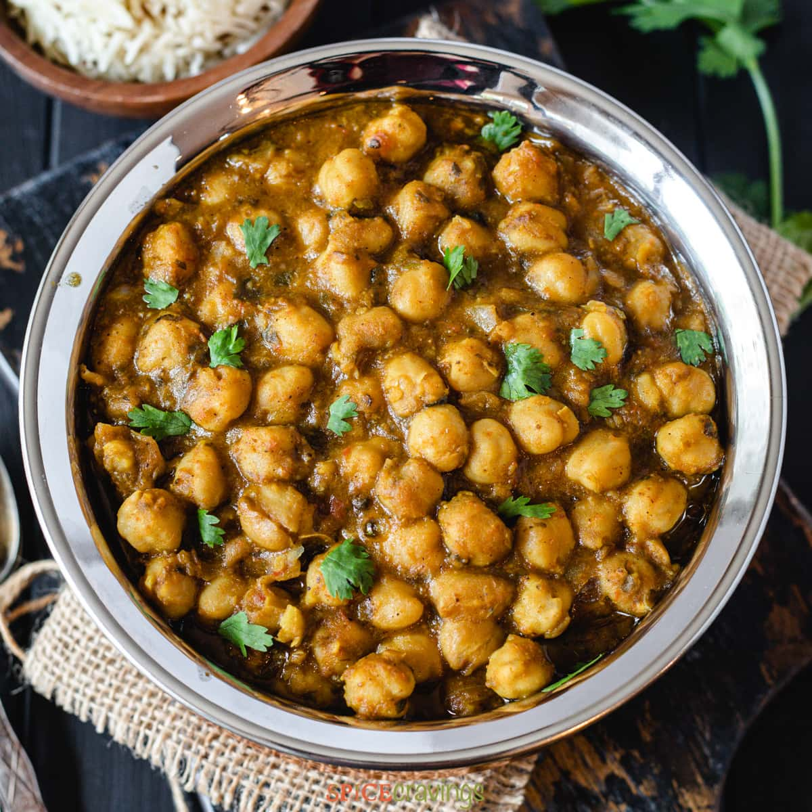

CHANA MASALA

Ingredients:
-1 cup dried chickpeas, soaked overnight and drained
-1 large onion, chopped
-2 large tomatoes, chopped
-2 cloves garlic, minced
-1 inch ginger, grated
-2 green chillies, chopped
-1 tsp cumin seeds
-1 tsp coriander powder
-1 tsp garam masala
-1 tsp turmeric
-Salt, to taste
-2 tbsp oil
-2 tbsp chopped cilantro leaves
Instructions:
Heat oil in a large pan, add cumin seeds and allow them to sizzle.
Add chopped onion and saute until golden brown.
Add ginger, garlic and green chillies and saute for a minute.
Add chopped tomatoes and cook until they turn soft.
Add coriander powder, turmeric, garam masala and salt. Cook for 2-3 minutes.
Add soaked and drained chickpeas and mix well.
Add water to cover the chickpeas and cook for 20-25 minutes or until the chickpeas are tender.
Garnish with chopped cilantro leaves and serve hot with rice or naan.
Note: The recipe can be adjusted according to personal preferences, such as adding
more or less spices or adjusting the cooking time.
Contact Us
flavours@gmail.com
 @flavoursofindia
@flavoursofindia
 @flavours
@flavours
© 2023 Flavours.com